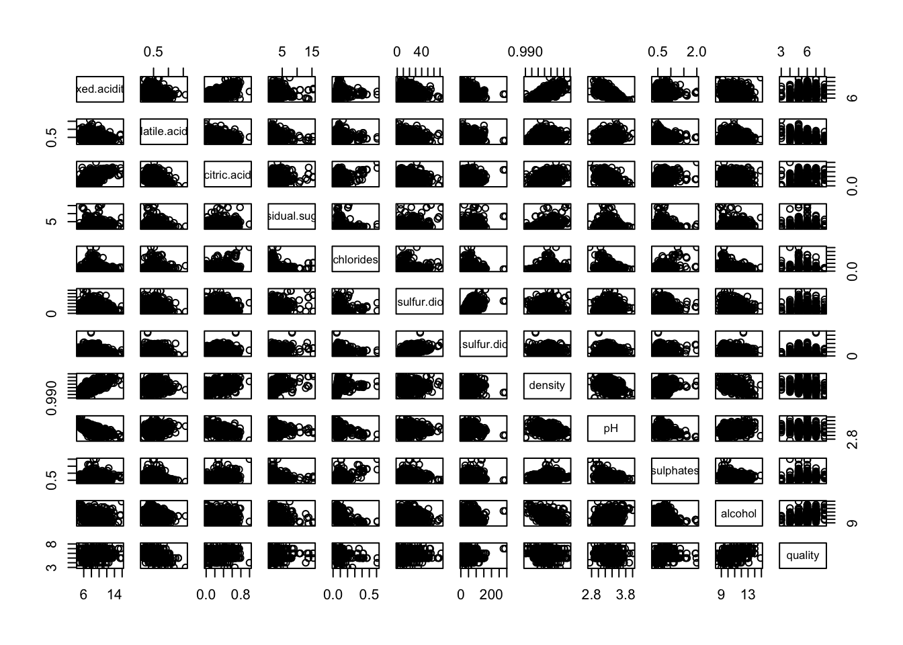
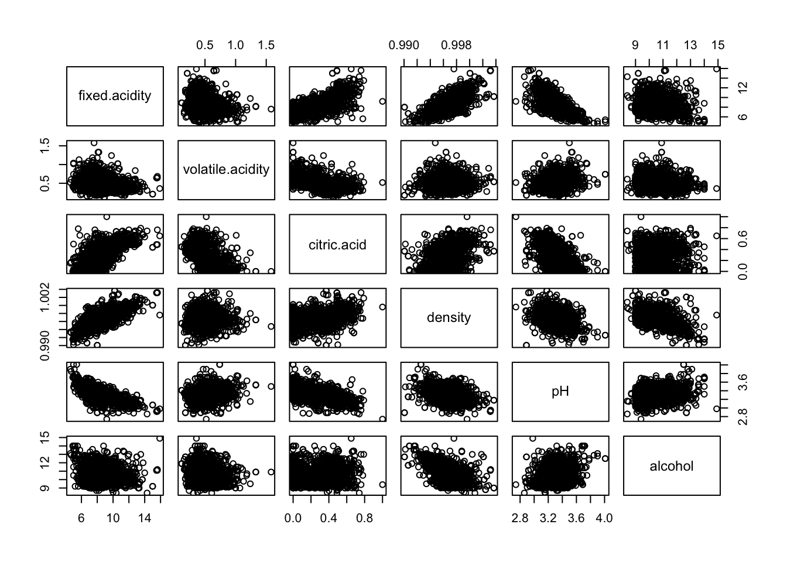
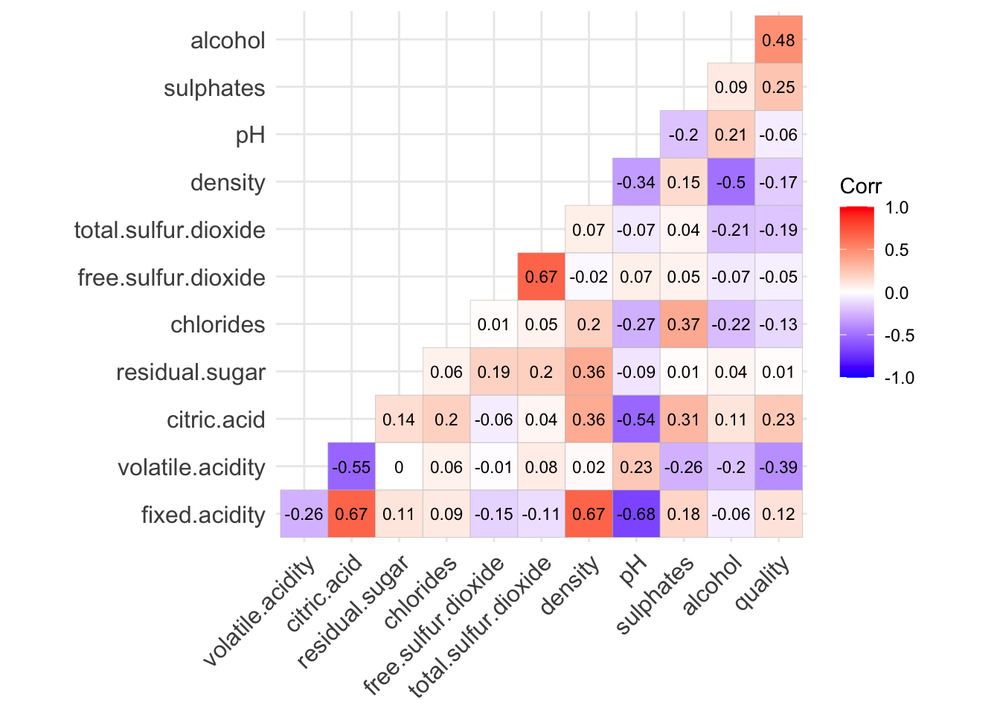
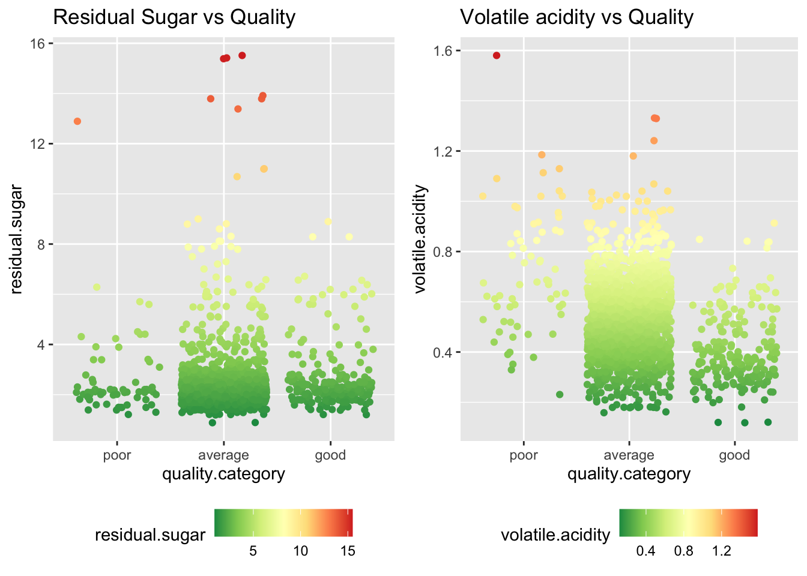
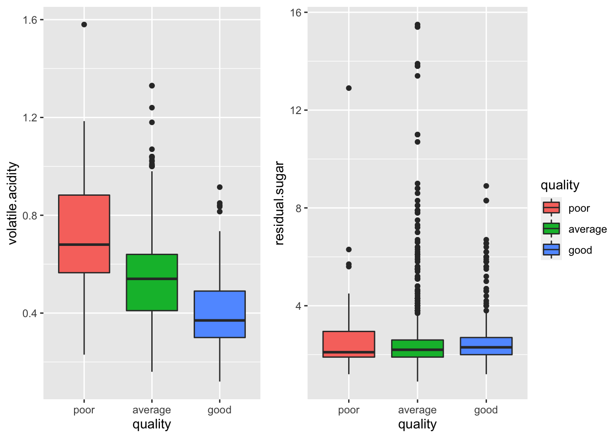
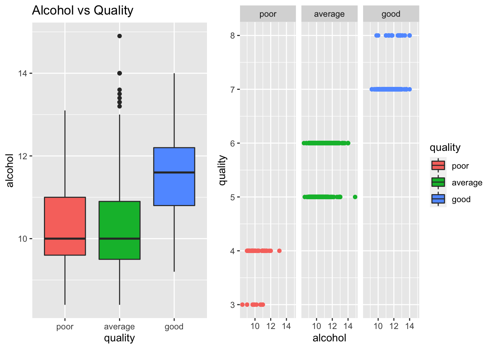
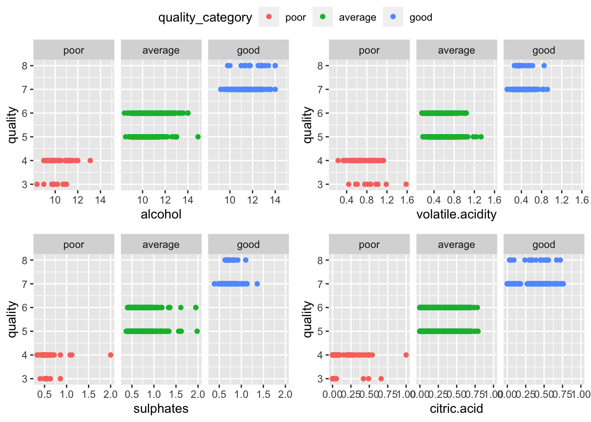
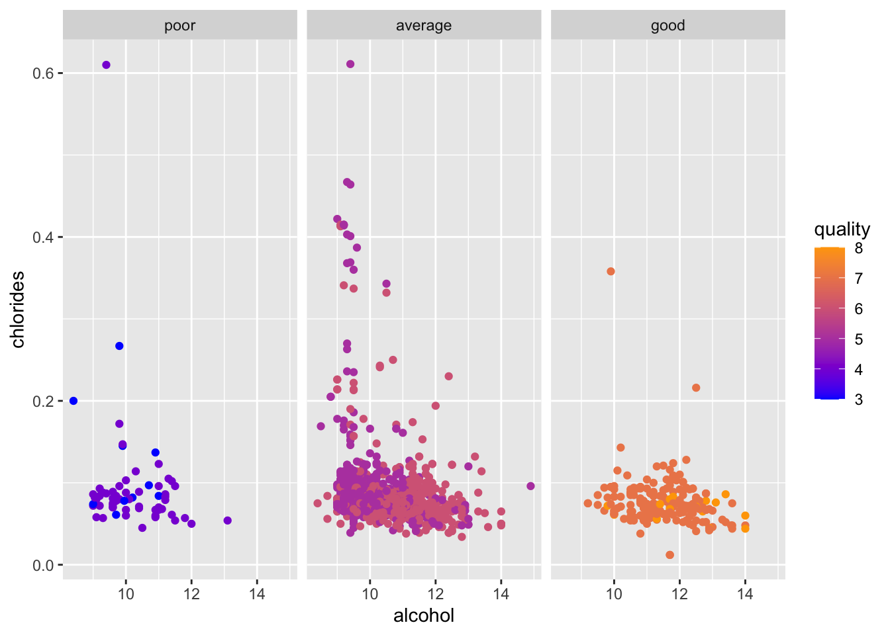
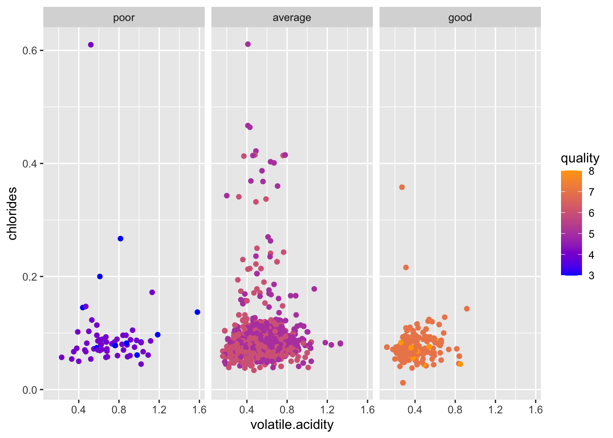
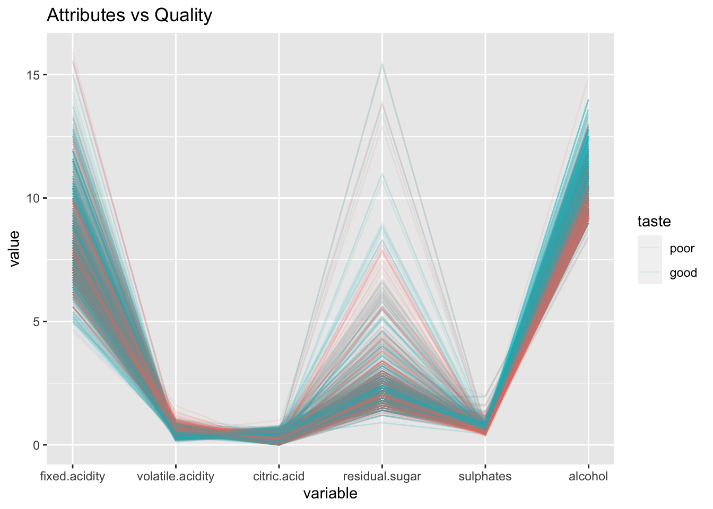

Chapter 5 Results
5.1 Distribution and Outliers
5.1.1 Histogram for Attributes

From the histogram, there are several things we observed:
Volatile acidity, density, and pH seem to be normally distributed.
Alcohol level, fixed acidity, free sulfur dioxide, sulphates, and total sulfur dioxide are right skewed.
Chlorides and residual sugar have relatively low variance.
Citric acid seems to have a plateau-shaped distribution.
Most wine has the quality of 5 and 6.
5.1.2 Boxplot for Attributes

From the boxplot, there are several things we observed:
All the attributes have quite many outliers except citric.acid and alcohol. The observation might indicate better data in these two attributes and we would keey an eye on them while conducting correlation analysis.
The median of our dependent variable - quality is 6.
5.2 Pairwise Attribute Correlation
5.2.1 Scatterplot Matrix
 
5.2.2 Correlation Heatmap

From both the scattorplot matrix and correlation heatmap, we observe that the following pairs of variables seem to have a linear correlation:
strong positive correlation: fixed acidity/citric acid, fixed acidity/density
strong negative correlation: fixed acidity/pH, density/alcohol
The observation is consistent with one of our conjectures: the sweeter the red wine is, the higher is the density.
5.3 Correlation between Quality and Attributes
 Recall the correlation heatmap, we can also tell attributes such as alcohol, citric acid and volatile acidity seem to have a linear correlation with quality.
Recall the correlation heatmap, we can also tell attributes such as alcohol, citric acid and volatile acidity seem to have a linear correlation with quality.
5.3.1 Sweetness and Sourness v.s. Quality

When rookies first drink red wine, it's much easier to taste the level of sweetness and acidity. This common sense is consistent with our scatterplot for residual sugar and volatile acidity versus quality.
- Residual Sugar vs Quality
We can see that only red wines with quality on or below average have high and middle residual sugar, while red wines with good quality only have low residual sugar. So, if the red wine you taste is very sweet , the quality of the red wine you drink is probably on or below average.
- Volatile acidity vs Quality
Observe that only red wines with quality on or below average has high volatile acidity. So, if you taste the red wine is very sour, the quality red wine you drink is probably on or below average.
However, we have to keep in mind that the scattorplot above doesn't generate any linear correlation between quality and sweetness/sourness.

Now, from the boxplot above, we observe that there seems to be no linear correlation between quality and residual sugar. On the contrary, quality and volatile acidity seems to be negatively correlated. That is, the lower volatile acidity implies the better quality.
5.4 Alcohol v.s. Quality

Alcohol has the strongest positive correlation with quality in our dataset. And from this graph, we can clearly see this relationship. Better wines have a high alcohol percentage. It is either because strong wines are more tasty or people who rates wines are wine lovers and they favor strong wines.
5.5 ?
The following graph could further justify the above mentioned relationship between wine quality and alcohol density. 
5.6 Pair Attributes v.s. Quality
Then, let's study how the combination of two variables affects quality by looking at some multivariate graphs.
5.6.1 Alcohol + Volatile Acidity
From the graph above, wee can see that good wines have higher alcohol and low volatile acidity levels than the other two groups with some outliers. The wine with the highest alcohol level scored only a 5 in quality. Also, the poor wines seem to have a dispersed distribution suggesting that people are consistent in the standards of good wines but inconsistent in the standards of poor wines.
5.6.2 Alcohol + Chlorides

This graph is interesting because it shows that most wines that have high chlorides level are categorized as average wines. This pattern suggests that chlorides may have a non-linear relationship with quality.
5.6.3 Volatile Acidity + Chlorides

This graph supports our theory before that people have consistent standards of good wine and inconsistent standards of poor wines. Because all good wines are clustered in the lower left corner of the graph and poor wines have dispersed distribution.
5.7 Parallel Coordinate Plot
 From the above parallel coordinate plot, it can further validate our correlation relationships between different variables. It can also indicates which factor leads to good taste for the red wine.